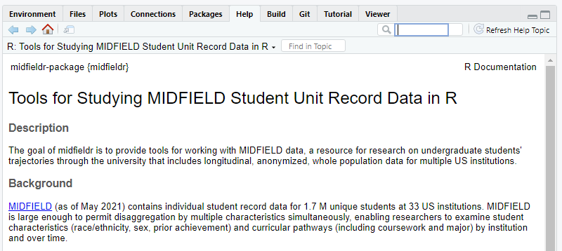
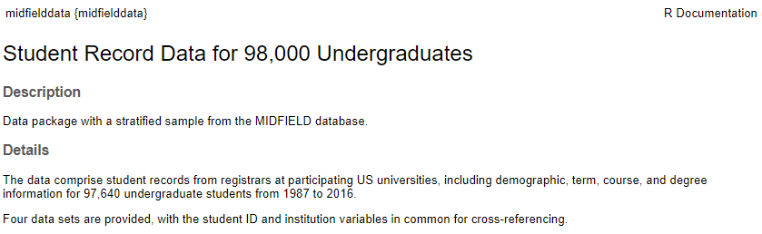

Tools for Studying MIDFIELD Student Unit Record Data in R
The goal of midfieldr is to provide tools and guides for working with longitudinal data from the MIDFIELD database.
Overview
MIDFIELD contains individual Student Unit Record (SUR) data for 1.7M students at 21 US institutions (as of June 2022). MIDFIELD is large enough to permit grouping and summarizing by multiple characteristics, enabling researchers to examine student characteristics (race/ethnicity, sex, prior achievement) and curricular pathways (including coursework and major) by institution and over time.
midfieldr is an R package that provides tools for working with MIDFIELD SURs. The tools in midfieldr work with the research data in the MIDFIELD database and with the practice data in the midfielddata package.
midfielddata is an R package that provides practice data (a proportionate stratified sample of MIDFIELD) with longitudinal SURs for nearly 98,000 undergraduates at 12 institutions from 1987–2016 organized in four data tables:
| Data set | Each row is | N rows | N columns |
|---|---|---|---|
| student | a student upon being admitted | 98k | 13 |
| course | a student in a course | 3.4M | 12 |
| term | a student in a term | 711k | 13 |
| degree | a student who completes their program | 48k | 5 |
All four data tables are keyed by student ID. Tables student and degree have one observation (row) per student. Tables course and term have multiple observations per student because students can be enrolled in more than one course in a term and more than one term over their program.
Usage
The outline of our typical workflow is:
- Define the study parameters
- Transform the data to yield the observations of interest
- Calculate summary statistics and metrics
- Create tables and charts to display results
- Iterate
In this brief usage example, the goal is to tabulate counts of engineering students by race/ethnicity, sex, and graduation status. Data processing is performed using data.table syntax. From the midfielddata package, we use data sets student, term, and degree. From the midfieldr package, we use the functions:
# Packages used
library("midfieldr")
library("midfielddata")
suppressPackageStartupMessages(library("data.table"))
# Load the midfielddata practice data used here
data(student, term, degree)
# Initialize the working data table
DT <- copy(term)
# Timely completion term required for data sufficiency
DT <- add_timely_term(DT, midfield_term = term)
# Filter for data sufficiency
DT <- add_data_sufficiency(DT, midfield_term = term)
DT <- DT[data_sufficiency == "include"]
# Filter observations for degree-seeking
DT <- filter_match(DT, match_to = student, by_col = "mcid")
# Filter observations for engineering programs
DT <- DT[cip6 %like% "^14"]
# Filter observations for unique students (first instance)
DT <- DT[, .SD[1], by = c("mcid")]
# Determine if completion status is positive or negative
DT <- add_completion_status(DT, midfield_degree = degree)
# Add demographics
DT <- add_race_sex(DT, midfield_student = student)
# Calculate summary statistics
DT <- DT[, .N, by = c("completion_status", "sex", "race")]
# Tabulate results
DT[, race_sex := paste(race, sex)]
DT_display <- dcast(DT, race_sex ~ completion_status, value.var = "N")
setcolorder(DT_display, c("race_sex", "positive"))
setnames(DT_display,
old = c("race_sex", "positive", "negative"),
new = c("Group", "Positive outcome", "Negative outcome")
)Tabulated results of usage example. “Positive outcome” is the count of graduates completing their programs in no more than 6 years. “Negative outcome” is the sum of non-graduates plus graduates completing in more than 6 years.
| Group | Positive outcome | Negative outcome |
|---|---|---|
| Asian Female | 124 | 78 |
| Asian Male | 388 | 269 |
| Black Female | 309 | 248 |
| Black Male | 376 | 527 |
| Hispanic/Latinx Female | 63 | 27 |
| Hispanic/Latinx Male | 188 | 130 |
| International Female | 22 | 18 |
| International Male | 114 | 104 |
| Native American Female | 10 | 6 |
| Native American Male | 27 | 30 |
| Other/Unknown Female | 29 | 17 |
| Other/Unknown Male | 71 | 75 |
| White Female | 1226 | 622 |
| White Male | 4527 | 2825 |
Documentation
- Articles. For a listing of all vignettes.
- Reference (midfieldr). For a listing of all midfieldr functions and prepared data.
- Reference (midfielddata). For a listing of the four practice MIDFIELD data tables.
Requirements
- R (>= 3.5.0)
-
data.table (>= 1.9.8)
- ggplot2 recommended for data graphics, but not required.
Install midfieldr
midfieldr is not yet available from CRAN. To install the development version of midfieldr from its drat repository, type in the Console:
# install midfieldr from drat repo
install.packages("midfieldr",
repos = "https://MIDFIELDR.github.io/drat/",
type = "source")You can confirm a successful installation by running the following lines to bring up the package help page in the Help window.
library("midfieldr")
help("midfieldr-package")
Install midfielddata
Because of its size, installing the practice data takes time; please be patient and wait for the prompt “>” to reappear. In the Console, run:
# install midfielddata
install.packages("midfielddata",
repos = "https://MIDFIELDR.github.io/drat/",
type = "source")
# be patientYou can confirm a successful installation by running the following lines to bring up the package help page in the Help window.
library("midfielddata")
help("midfielddata-package")
Contributing
To contribute to midfieldr,
- Please clone this repo locally.
- Commit your code on a separate branch.
- Use the checkmate package to include runtime argument checks in functions.
- Use the tinytest package to write unit tests for your code. Save tests in the
inst/tinytest/directory.
To provide feedback or report a bug,
- Use the GitHub Issues page.
- Please run the package unit tests and report the results with your bug report. Any user can run the package tests by installing the tinytest package and running:
test_results <- tinytest::test_package("midfieldr")
as.data.frame(test_results)Participation in this open source project is subject to a Code of Conduct.
Acknowledgments
This work is supported by a grant from the US National Science Foundation (EEC 1545667).
License
midfieldr is licensed under GPL (>= 2.0) (full license)
© 2018–2022 Richard Layton, Russell Long, Susan Lord, Matthew Ohland, and Marisa Orr.